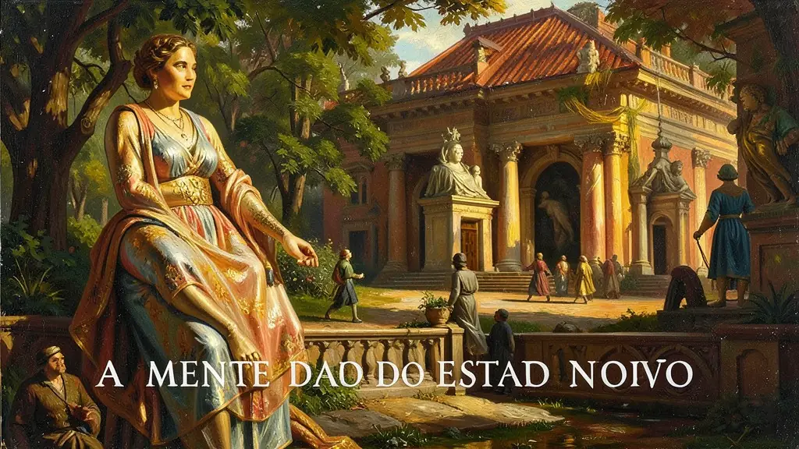
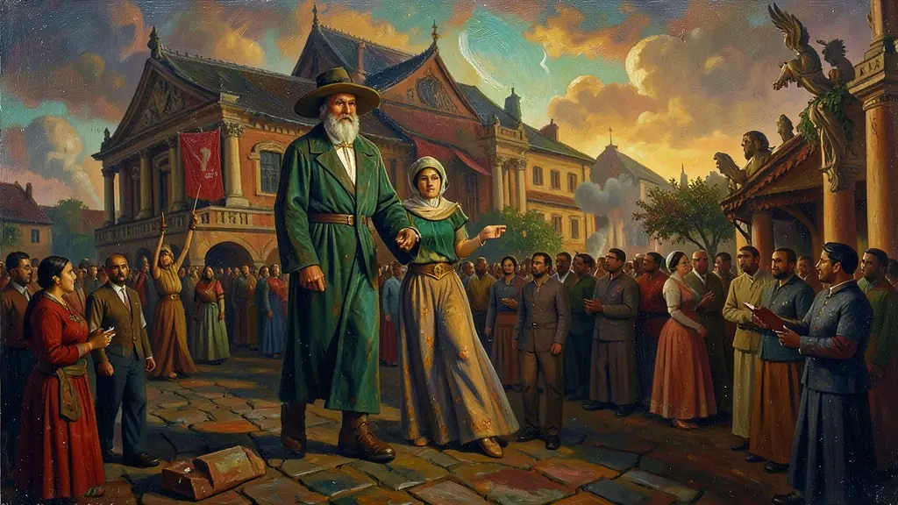

Capítulo 01
1. A Hora do Brasil: O Silêncio Obrigatório
Às 19h, o Brasil parava. Todas as rádios eram obrigadas a transmitir a 'Hora do Brasil'. O locutor abria com o prefixo solene e começava a ler os decretos de Vargas como se fossem presentes para a nação. O rádio foi o 'fio invisível' que uniu o interior do Brasil à capital, mas era um rádio de via única: o governo falava e o povo escutava, sem direito a resposta ou debate.

Capítulo 02
2. O Samba de Ordem: A Domesticação da Cultura
Antes de Vargas, o samba falava de malandragem e boemia. O DIP incentivou (e censurou) os compositores a falarem de trabalho e patriotismo. O samba 'Aquarela do Brasil' é o exemplo máximo: um Brasil de 'coqueiros e pandeiros' pronto para o turismo. O DIP queria que o trabalhador visse a labuta como uma festa nacional, apagando a realidade dura das favelas e das baixas rendas da propaganda de exportação.

Capítulo 03
3. O DIP no Cinema: Disney no Brasil
Durante a Segunda Guerra, os EUA queriam o apoio de Vargas. O DIP coordenou a visita de orquestras, diretores e do próprio Walt Disney ao Brasil. Disney criou o personagem 'Zé Carioca', o papagaio malandro, para suavizar a imagem do brasileiro para o mundo. O cinema educativo do DIP era obrigatório em todas as sessões, ensinando higiene, civismo e amor a Getúlio antes dos filmes de Hollywood.
Capítulo 04
4. Censura: O Lápis Vermelho do Estado
Dentro de cada grande jornal do Brasil, havia uma mesa para o censor do DIP. Nenhuma manchete saía sem o visto do governo. Críticas ao exército, ao preço da carne ou ao próprio presidente eram 'riscadas'. Livros eram recolhidos das livrarias se tivessem 'ideias subversivas'. Getúlio calava a inteligência para garantir que a maioria do povo visse apenas a 'luz' das suas obras públicas e monumentais.
Capítulo 05
5. A Imagem do Guia: O Culto à Personalidade
O rosto de Getúlio estava em todo lugar. Havia concursos de redação para crianças sobre 'Pedro Álvares Cabral e Getúlio Vargas'. O DIP criou uma mitologia onde o presidente era o sucessor natural dos heróis históricos. Essa lavagem cerebral foi tão eficiente que, mesmo após a queda da ditadura em 1945, milhões de brasileiros continuaram amando Vargas por causa da 'lembrança feliz' construída pelos cartazes do DIP.
Para manutenção irrestrita e consolidação do violento cerceamento ditatorial varguista após o anoidecer autoritário fascista estabelecido na cartilha em 1937, instituiram nevrálgico tentáculo executor, o colossal Ministério repressor estético midiático; O temido e inescrupuloso DIP (Departamento de Imprensa e Propaganda) operando ativamente os corações como escudo férreo doutrinário na sustentação unânime irrefutável moral nacional.
Operante sob os rigores massificados modernos das cartilhas comunicacionais goebbelianas extremistas, o braço do DIP censurava amordaçava brutalmente irrefutavelmente a imprensa refratária de críticas livres, as artes literárias teatrais intelectuais inteiras modelavam na fabricação da apoteótica mitificação inatingível de Getúlio elevado messiânica ao epíteto patriarcal unânime idolatrado 'O Pai abnegado dos Pobres', onipresente glorioso exaltado e magnânimo salvador patriota indubitável do operariado na apoteótica 'A Hora do Brasil'.
Configura nos avaliativos analíticos cruciais da história identificar que a ditadura não lastreava seu jugo tirânico tão e solitariamente exclusivo através violenta prisão e eliminação dos refratários e 'subversivos' comunistas operada sumariamehte na temida filinto Muller policia, era necessário imperativamente de modo complementar domar e cativar profundamente e anestesiar subliminar as amplas bases massas obreiras e juventude atadas num torpor fascínio alienante através efusivo ufanista cultural esportista festividades.
Fonte: SCHWARCZ, Lilia M.; STARLING, Heloisa M. Brasil: Uma Biografia. Cia das Letras, 2015.
Atividades interativas
Questões para fixar
O Departamento de Imprensa e Propaganda (DIP), criado durante o Estado Novo varguista, exercia qual papel fundamental na sociedade brasileira?
O programa de rádio 'A Hora do Brasil', instituído por Vargas, tinha como objetivo comunicacional:
Qual era o objetivo principal do DIP em relação à cultura durante o Estado Novo?
Qual foi o papel do rádio no contexto do DIP durante o Estado Novo?
Qual era o tratamento dado aos jornais que criticavam o governo durante o Estado Novo?